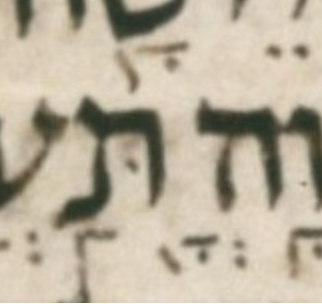

| n | 21 |
| citation:book | 2Kings |
| citation:c | 19 |
| citation:v | 31 |
| citation:position | 10 |
| author:name | Ben Denckla |
| author:mail | bdenckla@alum.mit.edu |
| author:confirmed | true |
| description | Note that while creating the pointed qere, the transcriber added a ḥolam malei dot to vav |
| lc:folio | Folio_216A |
| lc:column | 3 |
| lc:line | 22 |
| lc:credit | Credit: Sefaria.org. |
| reftext | צְבָא֖וֹת |
| refuni | tsadi sheva bet qamats alef tipeha vav holam tav |
| changetext | צְבָא֖וֹת |
| changeuni | tsadi sheva bet qamats alef tipeha vav holam tav |
| notes:note | The manuscript’s pointed ketiv (MPK) is אְׄאָׄא֖ׄאׄאׄ. (We use אׄ (א with an extraordinary upper dot) to hold marks not associated with a parent letter.) |
| notes:note-2 | The MPK has no letter to carry a ḥolam dot for the qere’s vav. The MPK (points on no letters) is sheva, qamats, and tipeḥa. |
| transnotes:transnote:action | Add |
| transnotes:transnote:type | a |
| transnotes:transnote:beforetext | XXX fill me in beforetext |
| status | Pending |
| type | NoTextChange |